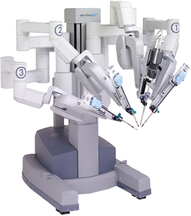
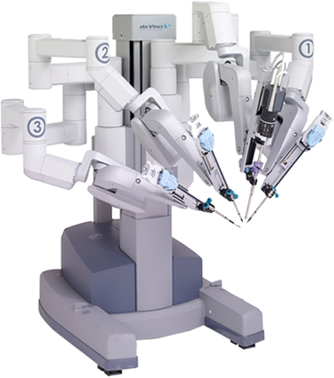
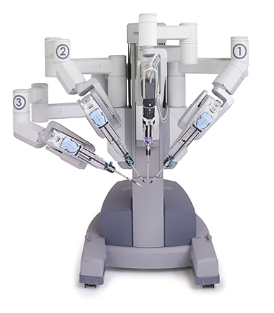

Робот-хирург Da-Vinci
Это совершенные технологии будущего в современной медицине.
Узнайте, почему многие пациенты и хирурги выбрали робота-хирурга Да Винчи, а также узнайте о клинических данных, поддерживающих его применение.
О проекте
Робот - хирург Da Vinci

Без разрезов, без ошибок, без опасности
Роботизированная хирургическая система «Da Vinci» - лучшая в мире медицинская технология для лечения онкологических заболеваний. Врачи Краснодарского клинического онкологического диспансера прооперировали с помощью робота сотни пациентов. Жители Краснодарского края, а также всего Юга России и Северного Кавказа получают высокотехнологичное лечение и возможность вернуться к полноценной жизни в самый короткий срок.
Почему именно робот Da Vinci?
С момента первых операции в 2001 году и по сей день система не имеет аналогов, что подтверждает ее инновационность.


Преимущества робота «Да Винчи»
Операции без разрезов
С помощью робота делаются лапароскопические операции. От традиционного хирургического вмешательства их отличает малая травматичность, короткие сроки госпитального периода, быстрый период восстановления и хороший косметический эффект.
Самая высокая точность
Она достигается за счет большой подвижности механических рук робота. Это позволяет хирургу, который управляет «инструментом», действовать предельно осторожно и выверено.
Доступ в глубокие области
Анатомическое строение тела имеет свои особенности, и зачастую в процессе проведения операции возникают трудности с доступом в глубокие области, например, такие как тазовая. Использование хирургического робота «Da Vinci» позволяет решить эту задачу максимально безопасно.
Короткий восстановительный период
Время операции, как правило, занимает чуть больше двух часов. Пациент выписывается через 2-3 дня, физические нагрузки разрешаются уже через две-три недели.